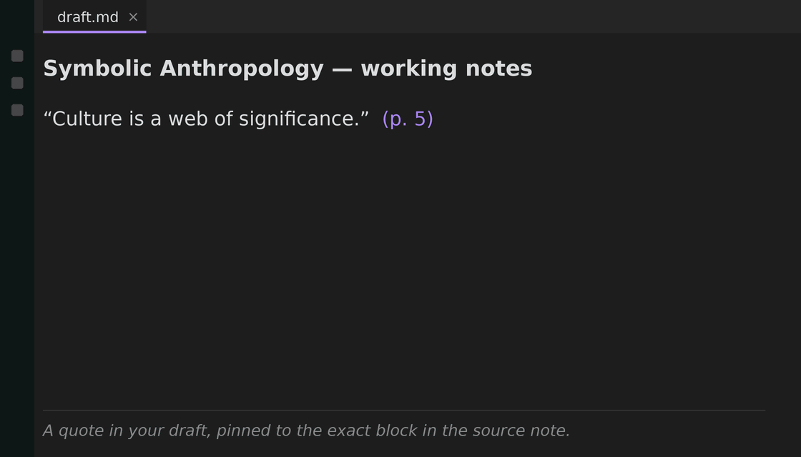

You paste a quote, then later edit the source note. The link still resolves, so Obsidian shows all good, but the words you quoted no longer match. Cite Engine is the check for exactly that.

Block references resolve by id. Rename the note or reword the passage and the link still works. The quote you typed next to it is a frozen copy that never updates, and nothing flags the mismatch. Your link is green while your quote is wrong.
Native Obsidian shows the first line only. Cite Engine catches the second.
Quote: Isaiah Berlin, Four Essays on Liberty, p. 121 (shown verbatim, since fidelity is the whole point).
Deterministic on the part that has to be true. Nothing is summarized, nothing is invented, and your prose is never rewritten. It just tells you which quotes to look at.
Gives a clipped note a stable citekey and a block id on every passage. Idempotent.
Fuzzy-pick a real passage and insert a live block-ref citation. There is no free-text path, so you cannot cite something that doesn't exist.
Scans the note and flags any citation that no longer resolves, and any quote that has drifted from its source. Drops them in a review list.
The whole citation and drift core runs locally. No backend, no account, no data leaves your vault. Works alongside Zotero and the Web Clipper.
Bring your own AI. The paid layer takes any draft you already have, including one written by Copilot or ChatGPT, and checks every citation against your own sources. Anything that doesn't resolve to a real verbatim passage in your vault gets flagged as unsupported, never passed off as real. You get an exportable integrity report you can stand behind before you submit.
We are the validator, not a second writer. Keep the tools you already pay for, and we guarantee the sourcing.
Join the waitlistTwo questions: would you pay to certify your citations before you submit, and would you pay us to check an AI's output against your own sources.
Rarely. The block id is stable, so the link keeps resolving even after a rename. The failure people actually hit is the opposite: the link works but the quoted words changed. More on quotes going out of sync →
Zotero plus an integration plugin for the bibliography, and a quote-integrity tool like Cite Engine for catching stale quotes. They solve different halves. The full rundown → · Zotero + Obsidian workflow →
No. Zotero manages your references. Cite Engine checks that a quote you already pasted still matches its source after edits. Use both.